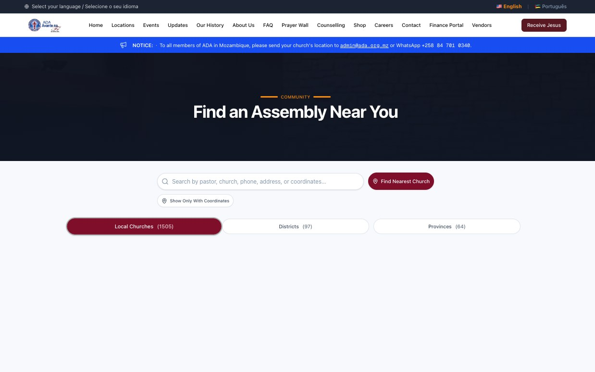
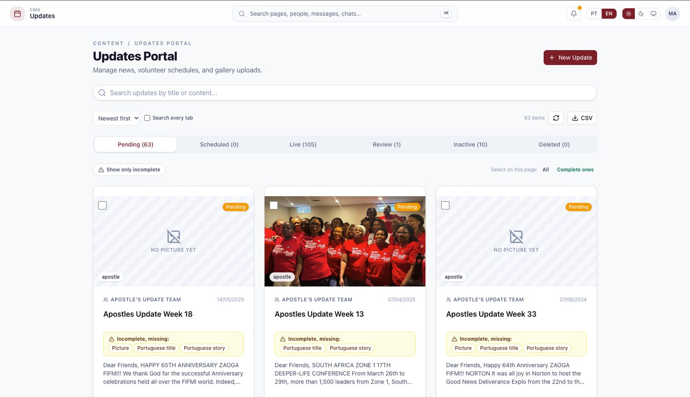
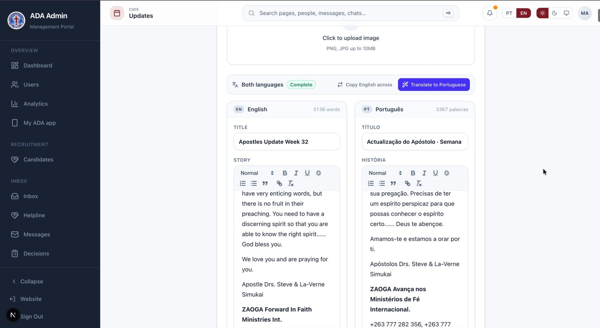
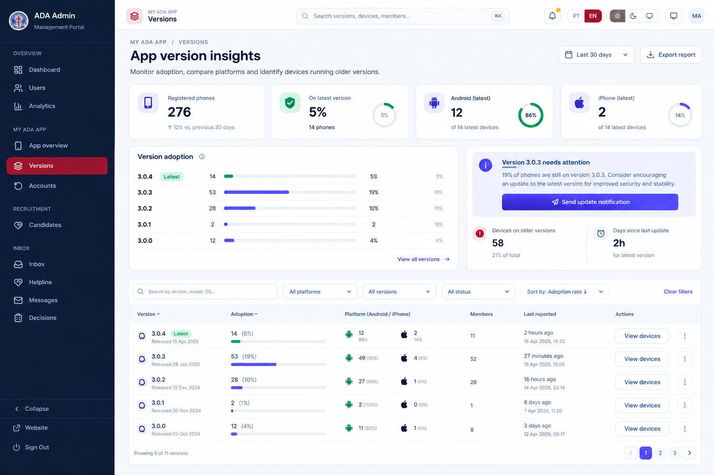
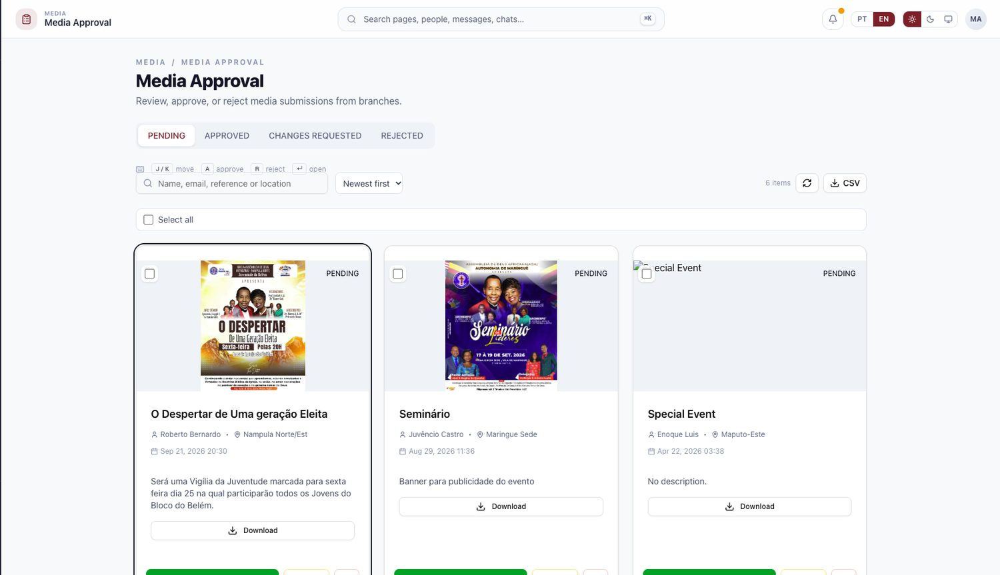
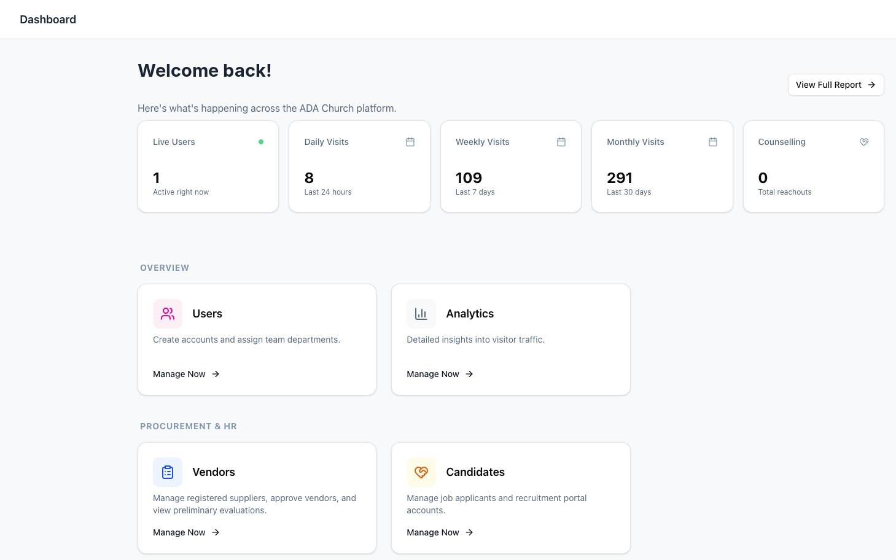
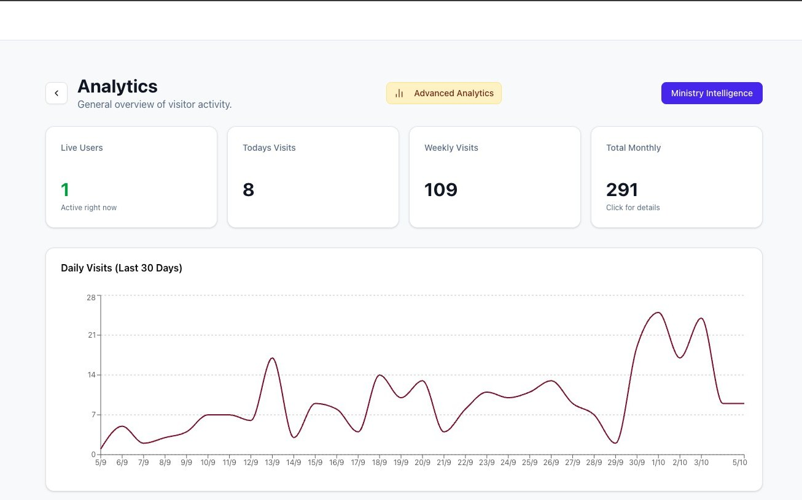
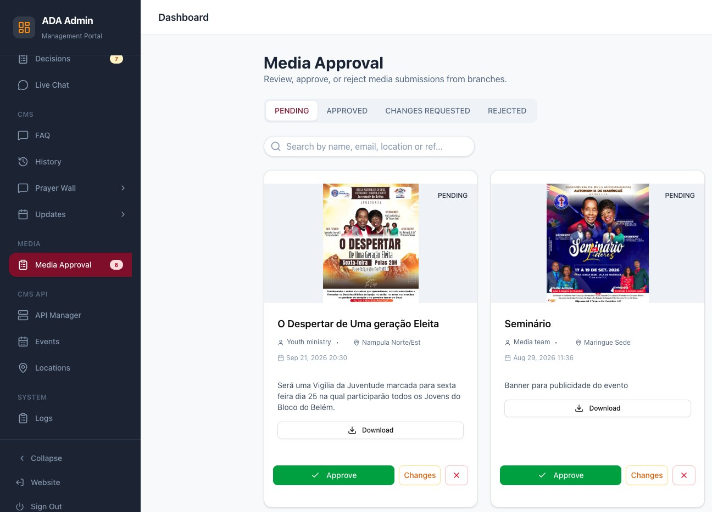
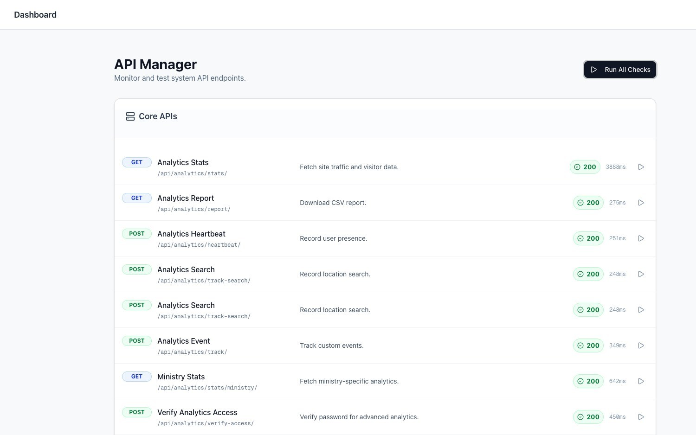

ADA
Not just a church website. The public voice and communications back office of a national denomination in Mozambique — the Apostle's weekly word imported and translated, a directory of 1,508 churches on a map, prayer, media approvals, careers and a bilingual two-factor admin console — wired to the church's ERP and member app, on infrastructure I provisioned and maintain.
Live site: ada.org.mz — fully bilingual Portuguese and English. Sister systems: the church's ERP and the My ADA app.
The brief
A denomination this size runs on information that mostly lives in people's heads: which assemblies exist in which district, who leads them, how to reach them, what's happening this month, who has applied to serve, who has asked for prayer or called the helpline.
The organisation needed one system that members and the public could use, and that administrators could actually run — fully bilingual in Portuguese and English, on connections and devices that are not a fibre line and a new laptop.
What I built
Public and member-facing
Congregation directory
Districts and assemblies with leaders, contacts and coordinates, searchable and plotted on an interactive Leaflet map so someone can find the nearest congregation.
The Apostle's Update
Each week's letter is imported from the ministry's site at dawn, machine-drafted into Portuguese, reviewed and published — with a featured story, year navigation, comments from the website and the app, and credit to the source only where it applies.
Accounts with OTP
Registration, login, one-time-password verification and password recovery, built for people whose most reliable channel is a phone number.
Careers & offers
Applications for roles, reviewed and progressed by administrators through to a formal offer, all tracked in-platform.
Prayer & helpline
Confidential prayer requests and helpline contacts routed to the right people, with the sensitivity that implies about who can read what.
Businesses, watch, the app
The ACBF directory of member-run businesses with a public sign-up form; a watch page for Ezekiel TV; the word of the day from the app; store badges, a Smart App Banner and an /app page so the website hands members to My ADA.
The admin console
Twenty areas covering the whole operation: a dashboard of each person's queues by urgency, inbox and decisions, a bilingual updates editor with a translate button, media approval with archiving, prayers, live chat with quick replies, helpline, candidates, the ACBF review workspace, users and security, activity log, analytics, API docs — and a My ADA section that shows every app version in use, dormant accounts and reactivation requests, read live from the ERP. Portuguese and English, dark mode, keyboard shortcuts, smart search, desktop notifications. The console is the actual product — the public site is what it renders.
A media approval queue rather than direct publishing. When contributors across many assemblies can upload, the question stops being "can they publish?" and becomes "who signed off on this appearing under the denomination's name?"
Screens
Public site


Admin console








Architecture
Four containers on one modest VPS, orchestrated with Docker Compose. The database and application server are never exposed to the internet; nginx terminates TLS and everything else talks over the internal network.
Internet
│ 443 / 80
▼
nginx TLS termination · static & media volumes
│ ▲
│ └── certbot Let's Encrypt renewal
┌───────┴────────┐
▼ ▼
frontend backend
Next.js Django + DRF
:3000 (internal) gunicorn :8000 (internal)
│ │
│ ▼
│ PostgreSQL 15 bound to 127.0.0.1 only
│
└── internal-api/proxy server-side fetch, domain allowlist
Django apps accounts · updates · prayers · helpline · chat · contact
faq · media · media_approval · analytics · activity_logs
history · inbox · alerts · shop · core
Jobs 07:20 import the Apostle's Update · 07:50 copy updates to the ERP
06:50 morning digest · 02:10 housekeeping · 02:40 backup · 03:10 restore test
The proxy layer
The browser never calls the API directly. Requests go to Next.js server routes which attach
credentials server-side and forward on — and the proxy validates the target against an explicit
domain allowlist before it will fetch anything, so a crafted url
parameter can't turn the server into an open relay. That same layer is what lets the platform
pull from the denomination's separate finance system without ever putting its token in a
browser.
Three systems, one key each
The website talks to the ERP with a scoped, non-expiring service key that can do exactly four things — read app adoption, list dormant accounts, decide reactivations, and push updates — and nothing else. The ERP announces each new Apostle's Update to the app with one push; comments made in the app come back to the website under the same story. Nobody signs in twice, and no key can do more than its job.
The harder parts
Running a real stack on a small box
Both application containers carry explicit CPU and memory limits — half a core each, 512MB for Django, 1GB for Next.js — and the server needed a swap file provisioned before Next.js would build on it at all. Deploying to a constrained VPS is an exercise in knowing exactly what each process costs, which a managed platform lets you never learn.
Certificates that renew themselves
Certbot runs alongside nginx sharing the challenge and certificate volumes, so TLS renews without anyone remembering to do it. On a self-hosted stack an expired certificate is a total outage, and it happens on the day nobody is watching.
A deploy you can trust at speed
One scripted path: commit, push, pull on the server, rebuild the affected containers, run migrations, collect static, restart. Scripting it is what makes a fix at 11pm safe, because the risky step is never the code — it's the half-remembered command sequence.
Translation that knows when to stop
The weekly letter runs to several thousand words, and the free translation tiers throttle hard. The importer paces itself per minute, backs off and resumes, splits long stories at paragraph boundaries rather than mid-sentence, and — when Azure's monthly allowance runs out — says so on the Translate button instead of failing quietly. Translated text credits the machine; imported text credits the source; original writing credits neither.
Finding what was broken
A fresh review of the live site in October found a login with no rate limit, an API relay that would forward any path with a privileged token attached, and a test runner silently skipping a quarter of the suite. All three were fixed the same week, with tests that would catch their return, before any of the new work shipped on top.
Bilingual, not translated
The platform runs fully in Portuguese and English — over a thousand translated strings behind a language switcher, covering the public site and the admin console alike.
Retrofitting a second language is where most projects come unstuck: strings end up hardcoded in components, and the half nobody translated is always the half administrators use daily. Building the translation layer in from the start made the switch total rather than cosmetic — which matters for a denomination whose reach spans Lusophone Mozambique and English-speaking partners abroad.